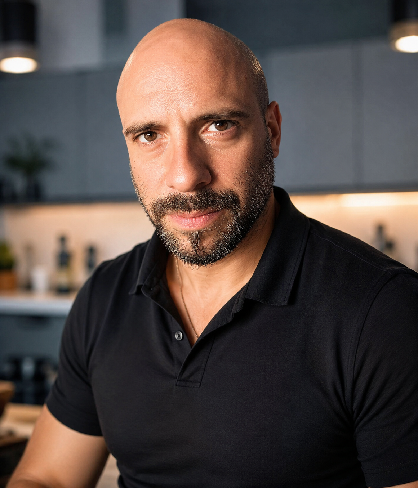

NStudio
NStudio est une agence de développement numérique fondée sur une conviction simple : l'humain doit grandir en même temps que les systèmes qu'il construit.
Credo 1.618
Comprendre avant d'agir. Structurer avant de produire.
Transmettre avant de remplacer. Développer avant de contrôler.
Les 5 Piliers Fondateurs
Le carré enferme. La sphère relie. La spirale élève. NStudio transforme les systèmes rigides en environnements vivants.
Observer le réel avant d'intervenir. Comprendre les forces, les limites et les potentiels cachés.
Remplacer la répétition par une progression continue des méthodes et des compétences.
Faire circuler le savoir pour rendre les personnes plus autonomes, plus fortes et plus conscientes.
Relier les talents, les outils, les idées et les systèmes pour produire une intelligence collective.
Créer des structures capables de grandir avec les êtres humains qui les portent.
Du carré vers la sphère
NStudio ne conçoit pas le numérique comme un simple outil de production. Nous le concevons comme un espace de développement humain, stratégique et créatif.
Le système carré
Le système classique compartimente, encadre, spécialise et réduit progressivement l'humain à une fonction productive.
Il apprend la résignation, l'attente, la répétition et l'effacement progressif du potentiel.
La logique sphérique
La sphère représente un modèle vivant : chaque individu peut développer plusieurs dimensions de lui-même et contribuer à l'expansion de l'ensemble.
La performance devient alors humaine, technique, relationnelle et évolutive.
La spirale d'apprentissage
L'évolution ne suit pas une ligne droite. Elle fonctionne comme une spirale : on revient sur les mêmes sujets avec une compréhension plus haute, une méthode plus précise et une capacité de transmission plus forte.
Ce que construit NStudio
Des présences numériques crédibles, des systèmes de communication clairs, et des outils augmentés par l'intelligence artificielle.
Communication Web
Sites vitrines, pages professionnelles, identité numérique et structuration du message.
Intelligence Artificielle
Utilisation de l'IA pour analyser, rédiger, organiser, produire et améliorer les systèmes.
Présence digitale
Transformer un parcours, une activité ou une vision en présence lisible et crédible.
Transmission
Créer des supports, méthodes et contenus qui aident les personnes à comprendre et progresser.
Romain A. Tonolli
Responsable du Développement Terrain — Fondateur de NStudio
Parcours
Issu du monde industriel, Romain A. Tonolli a construit son expertise au contact du réel : production, qualité, maintenance, outillage, fabrication médicale et amélioration continue.
Son parcours l'a conduit à relier l'expérience terrain, l'observation des systèmes, la transmission des savoirs et les outils numériques modernes.
Signature
- Comprendre avant d'agir.
- Structurer avant de produire.
- Transmettre avant de remplacer.
- Développer avant de contrôler.
Entrer dans NStudio
Pour un projet web, une présence digitale, une stratégie IA ou une structure de transmission.